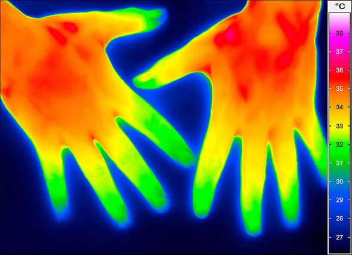
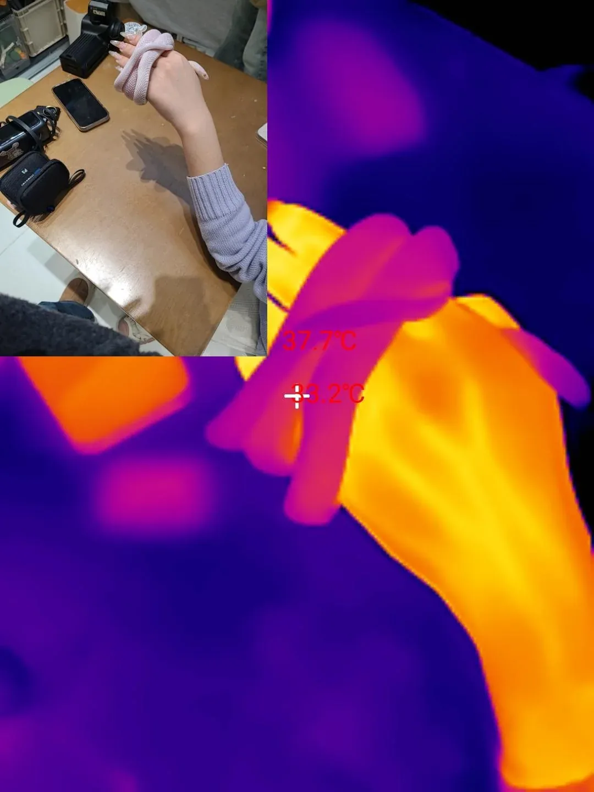

NAJWAŻNIEJSZY WNIOSEK
Nie istnieje jeden uniwersalny „obraz świata węża”. Węże różnią się aktywnością, środowiskiem i budową układu wzrokowego. Większość widzi świat oczami, ale tylko wybrane linie dodatkowo wykrywają promieniowanie podczerwone wyspecjalizowanymi dołkami czuciowymi.
Wąż z dołkami termicznymi nie ma w oczach kamery na podczerwień. Ma osobny narząd czuciowy, którego sygnał mózg może połączyć z informacją wzrokową.
Siatkówka analizuje światło widzialne. Udział pręcików i czopków zależy od ekologii gatunku.
Język dostarcza próbki do narządu lemieszowo-nosowego; nie „smakuje powietrza” w ludzkim sensie.
U części pytonów, boa i żmij jamistych reagują na promieniowanie podczerwone emitowane przez ciepłe obiekty.
ANATOMIA • NIE MA RUCHOMYCH POWIEK
Oko za przezroczystą osłoną
Wąż nie mruga. Jego oko stale przykrywa przezroczysta łuska nazywana okularem lub spectacle, powstała ze zrośniętych powiek. Jest częścią powierzchni skóry i zostaje zrzucona podczas prawidłowej wylinki. To dlatego nie należy próbować „otwierać oka” węża ani mechanicznie zdejmować zatrzymanego okularu bez fachowej oceny.
Pod osłoną znajduje się typowe oko kręgowca: rogówka, soczewka, tęczówka i siatkówka. Siatkówka zawiera fotoreceptory — pręciki pracujące szczególnie w słabym świetle oraz czopki ważne dla widzenia dziennego i rozróżniania długości fal. Ich proporcje i właściwości nie są jednak identyczne u wszystkich węży. Gatunek aktywny w dzień, nocny łowca z zasadzki i wąż wodny rozwiązują problem widzenia inaczej.
W fazie „blue” płyn i zmiany pomiędzy warstwami starego i nowego naskórka powodują zmętnienie okularu. Widzenie jest wtedy wyraźnie pogorszone. Zwierzę może silniej reagować obronnie, dlatego ograniczenie manipulacji jest rozsądną praktyką.
BARWY • UV • EWOLUCJA
Węże nie są po prostu daltonistami
Badania genów opsyn wykazały, że większość analizowanych węży zachowała trzy główne pigmenty wzrokowe: jeden związany z pręcikami (RH1) i dwa z czopkami (SWS1 oraz LWS). Taki zestaw wspiera możliwość widzenia barwnego, często opisywanego jako potencjalnie dichromatyczne. Nie oznacza jednak, że każdy gatunek widzi te same barwy ani że jego doświadczenie odpowiada ludzkiej palecie.
Szczególnie ostrożnie trzeba mówić o ultrafiolecie. Soczewki wielu nocnych i części dziennych węży przepuszczają krótkie fale, a białko SWS1 może być dostrojone do UV lub fioletu. U innych, zwłaszcza wyspecjalizowanych gatunków dziennych, soczewka odcina znaczną część krótkich fal. Wyjątkowy przypadek węży wodnych z rodzaju Helicops pokazuje nawet równoczesne warianty receptorów UV i fioletu. To dowód różnorodności, a nie podstawa do zdania „wszystkie węże widzą UV”.
GRANICA DOWODU
Gen nie jest gotowym filmem z oczu
Obecność opsyny mówi, jakie długości fal receptor może rejestrować. Pełne widzenie barw wymaga także porównania sygnałów w układzie nerwowym i najlepiej potwierdzenia zachowaniem. Dla wielu gatunków takich testów po prostu nie wykonano.
ŚWIATŁO • ŹRENICA • EKOLOGIA
Nocne widzenie to kompromis
W słabym świetle liczy się czułość, lecz zwykle odbywa się to kosztem szczegółowości i informacji barwnej. Kształt źrenicy może coś powiedzieć o ekologii, ale nie jest prostą etykietą „dzienny” albo „nocny”. Analiza wielu gatunków wykazała związek pionowej źrenicy zarówno z polowaniem z zasadzki, jak i rytmem aktywności. W przyrodzie pozostają wyjątki.
Nie należy też zakładać, że każdy wąż widzi „słabo”. Ostrość, pole widzenia, znaczenie ruchu i czułość na kontrast różnią się pomiędzy liniami. Dla zwierzęcia najważniejsze jest nie porównanie z ludzką tablicą okulistyczną, lecz rozwiązanie własnego zadania: wykrycie drapieżnika, przeszkody, partnera lub potencjalnej ofiary.
PODCZERWIEŃ • OSOBNY NARZĄD
Nie każdy wąż ma „szósty zmysł” ciepła
Zaawansowane wykrywanie promieniowania podczerwonego występuje w trzech niezależnych liniach: u żmij jamistych, u części pytonów i u części boa. Żmije jamiste mają parę dużych dołków lorealnych pomiędzy okiem a nozdrzem. Pytony i boa mogą mieć szeregi mniejszych dołków wargowych. Budowa, rozmieszczenie i czułość tych narządów nie są takie same.
W dołku znajduje się cienka, silnie unerwiona błona. Promieniowanie emitowane przez cieplejszy obiekt ogrzewa ją minimalnie. Kanał jonowy TRPA1 w zakończeniach nerwu trójdzielnego uczestniczy w przekształceniu tej zmiany temperatury w sygnał elektryczny. To termorecepcja uruchamiana przez promieniowanie, nie fotorecepcja siatkówki.
Dołek działa optycznie podobnie do bardzo niedoskonałej kamery otworkowej. Otwór ogranicza kierunki docierającego promieniowania i pozwala odtworzyć przestrzenny kontrast cieplny, ale obraz ma małą rozdzielczość. Jest wystarczający, by wskazać ciepły cel na chłodniejszym tle — szczególnie wtedy, gdy światła widzialnego jest mało.
TERMOGRAM • CO NAPRAWDĘ POKAZUJE
Czy wąż widzi tak jak na kolorowym termogramie?
Nie mamy podstaw, aby tak twierdzić. Kamera termowizyjna mierzy promieniowanie podczerwone, przelicza je na temperaturę, a następnie nakłada umowną paletę: fiolet, niebieski, czerwony, żółty lub biel. Te kolory wybrał człowiek, aby łatwo odczytać różnice. Nie są kolorami emitowanymi przez ciepło i nie dowodzą, że wąż doświadcza podobnego widoku.


MÓZG • DWA KANAŁY INFORMACJI
Wzrok i ciepło spotykają się w mózgu
Doświadczenia neurofizjologiczne na grzechotnikach i pytonach wykazały neurony reagujące zarówno na bodźce wzrokowe, jak i podczerwone. Mapy przestrzeni z obu zmysłów nakładają się w pokrywie wzrokowej śródmózgowia, choć nie są idealnie identyczne. U pytona królewskiego wykazano nawet zakończenia obu dróg na tych samych dendrytach.
To mocny dowód integracji informacji, ale nie licencja na rysowanie „tego, co widzi wąż”. Nie wiemy, czy zwierzę doświadcza ciepłego celu jako jasnej plamy, odrębnego wrażenia, czy innego rodzaju sygnału. Najuczciwsza odpowiedź brzmi: mózg zestawia położenie bodźca cieplnego z obrazem wzrokowym, natomiast jego subiektywna jakość pozostaje nieznana.
Potwierdzone: integracja sygnałów. Niepotwierdzone: wygląd świadomego „obrazu termicznego”. To dwie różne tezy.
PRAKTYKA • MORELIA • PYTHON • CORALLUS
Co z tej biologii wynika dla hodowcy?
Pytony zielone, pytony birmańskie oraz boa z rodzaju Corallus należą do grup wyposażonych w dołki wargowe. W praktyce oznacza to, że kontrast cieplny może wpływać na orientację łowiecką i obronną, lecz nigdy nie działa samotnie. Wąż korzysta równolegle ze wzroku, węchu, narządu lemieszowo-nosowego, dotyku i informacji o drganiach podłoża.
Ręce też są ciepłym celem
Po kontakcie z karmówką zapach dłoni łączy się z wyraźnym bodźcem cieplnym. Mycie rąk, narzędzia do karmienia i spokojna procedura ograniczają pomyłki.
Ofiara nie może parzyć
Rozmrożony pokarm powinien być ogrzany równomiernie i sprawdzony przed podaniem. Silny bodziec cieplny nie usprawiedliwia przegrzewania karmówki.
„Blue” zmienia zachowanie
Zmętnienie okularu przed wylinką ogranicza widzenie. Zapewnij spokój, stabilne warunki i ogranicz niepotrzebne manipulacje.
Noc ma być nocą
Nie zakładaj, że czerwone światło jest dla każdego węża niewidzialne. Do nocnej obserwacji lepsza jest kamera pracująca bez stałego oświetlania terrarium widzialnym światłem.
Dołki termiczne nie mierzą temperatury terrarium jak termometr i nie zastępują gradientu cieplnego. Dostarczają informacji o kierunku i kontraście promieniowania. Parametry środowiska nadal trzeba mierzyć właściwie rozmieszczonymi czujnikami oraz — przy kontroli powierzchni — świadomie używanym termometrem na podczerwień.
SZYBKA WERYFIKACJA
Pięć popularnych zdań pod lupą
Nie jako grupa. Oczy i ich znaczenie są jednak silnie zróżnicowane, a u części podziemnych gatunków wzrok został ewolucyjnie mocno ograniczony.
Nie. Obrazowanie kontrastu podczerwonego jest specjalizacją wybranych pytonów, boa i żmij jamistych.
Nie. Pokazuje pomiar kamery w barwach dobranych dla ludzkiego odbiorcy.
Zbyt ogólne. Zestaw opsyn wspiera widzenie barw u wielu gatunków, ale zakres różni się i nie zawsze został zbadany behawioralnie.
Tak. Zmętnienie przezroczystego okularu czasowo istotnie ogranicza widzenie.
Tak, potwierdzają to badania dróg nerwowych. Nie znamy jednak formy subiektywnego odczucia.
NAJCZĘSTSZE PYTANIA
FAQ: jak widzi wąż?
Czy wąż widzi jak kamera termowizyjna?
Nie. Kamera tworzy fałszywe kolory dla człowieka. U gatunków z dołkami termicznymi sygnał podczerwony dociera osobną drogą nerwową i jest integrowany z informacją wzrokową, ale nie znamy jego subiektywnego wyglądu.
Czy każdy wąż wyczuwa ciepło?
Nie w formie przestrzennego „obrazu” z wyspecjalizowanych dołków. Takie narządy mają żmije jamiste oraz część pytonów i boa; ich budowa i czułość są różne.
Czy węże widzą kolory i ultrafiolet?
Wiele gatunków ma dwa typy czopkowych opsyn, co wspiera możliwość widzenia barwnego. Czułość na UV albo fiolet zależy od wariantu opsyny i przepuszczalności soczewki. Nie wolno uogólniać wyniku jednego gatunku na wszystkie węże.
Dlaczego oko węża robi się mleczne?
Przed wylinką przezroczysty okular staje się mętny, co czasowo ogranicza widzenie. Jeżeli zmętnienie jest jednostronne, utrzymuje się po wylince albo towarzyszy mu obrzęk lub wydzielina, potrzebna jest ocena lekarza weterynarii zajmującego się gadami.
W JEDNYM ZDANIU
Wąż nie widzi mniej — widzi inaczej i zgodnie z własną ekologią.
Jego oczy analizują światło, ruch i kontrast, a u wybranych gatunków dołki termiczne dodają przestrzenną informację o promieniowaniu podczerwonym. Kolorowy termogram pomaga nam zrozumieć różnice temperatur, ale nie jest fotografią świadomości węża.
ZOBACZ FOTOGRAFIE →BIBLIOGRAFIA I WERYFIKACJA
Źródła użyte do opracowania
Twierdzenia o widzeniu i termorecepcji oparto przede wszystkim na publikacjach recenzowanych. Tam, gdzie badanie pokazuje mechanizm, ale nie pozwala odtworzyć subiektywnego wrażenia, granica została wskazana wprost.
Wzrok, opsyny i okular
- Simões B.F. i in. (2016). Visual Pigments, Ocular Filters and the Evolution of Snake Vision. Molecular Biology and Evolution 33:2483–2495. publikacja pierwotna.
- Hauzman E. i in. (2021). Simultaneous expression of UV- and violet-sensitive SWS1 opsins expands the visual palette in a group of freshwater snakes. Molecular Biology and Evolution 38:5225–5240. publikacja pierwotna.
- Da Silva M.O. i in. (2017). Morphology and histochemistry of the snake spectacle. BMC Veterinary Research. pełny tekst.
- Brischoux F. i in. (2010). Pupil shape and foraging mode in snakes. Journal of Evolutionary Biology 23:1870–1875. PubMed.
Podczerwień i integracja w mózgu
- Gracheva E.O. i in. (2010). Molecular basis of infrared detection by snakes. Nature 464:1006–1011. Nature.
- Hartline P.H., Kass L., Loop M.S. (1978). Merging of modalities in the optic tectum: infrared and visual integration in rattlesnakes. Science 199:1225–1229. PubMed.
- Newman E.A., Hartline P.H. (1981). Integration of visual and infrared information in bimodal neurons of the rattlesnake optic tectum. Science 213:789–791. PubMed.
- Kobayashi H. i in. (1992). Convergence of visual and infrared inputs on the same dendrite in the optic tectum of the python. Brain Research 597:313–318. PubMed.
- Clark D.L. i in. (2019). Python thermosensation: low-resolution infrared imaging and image reconstruction. Scientific Reports 9:426. pełny tekst.
Wysoki dla anatomii okularu, występowania opsyn, działania TRPA1 oraz integracji sygnałów wzrokowych i podczerwonych. Umiarkowany przy przekładaniu zestawu opsyn na konkretne doświadczenie barwne bez testów zachowania. Nieznany dla subiektywnego wyglądu sygnału termicznego — dlatego nie przedstawiono go jako „obrazu widzianego przez węża”.